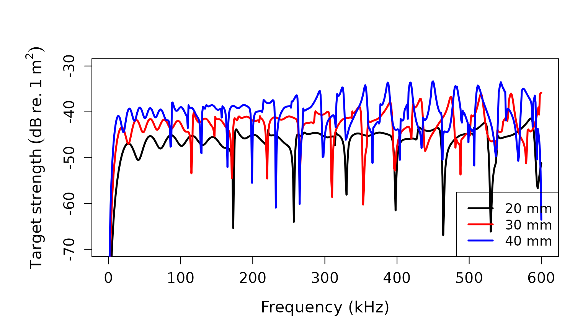

Target strength for a calibration sphere
Brandyn Lucca (https://orcid.org/0000-0003-3145-2969)
Source:vignettes/calibration_sphere_target_strength_vignette.Rmd
calibration_sphere_target_strength_vignette.RmdIntroduction
Echosounders are often calibrated using standard targets that comprise strong scatterers with target strengths (TS, dB re. 1 m2) that are relatively straightforward to model and predict1. Typically, this comprises a tungsten carbide (chemical formula: WC) sphere, but elastic spheres consisting of other materials (e.g. aluminum, Al) can also be used2.
acousticTS implementation
The acousticTS package adapts the series of equations
described in the literature3 that provide a solution of wave equations
based on the classical theory of elasticity. The object-based approach
in acousticTS makes this relatively straightforward by
minimizing the amount of manual coding end-users must write.
Calibration sphere object generation
First, a calibration sphere object has to be created. This is
represented by the CAL object class that contains slots for
metadata, model_parameters, model
results, body for sphere dimensions and material
properties, and shape_parameters for shape-specific
metadata. This object can be created using the
cal_generate(...) function that has two required arguments:
material and diameter. The default diameter is
38.1 mm, or 38.1e-3 m. The diameter input is
intended to be in meters.The material argument comprises
five default options that automatically include their respective
longitudinal and transversal sound speeds (m s-1) and
material density (kg m-3):
| Material | Argument value | Longitudinal sound speed (cl) | Transversal sound speed (ct) | Density (\(\rho\)) |
|---|---|---|---|---|
| Tungsten carbide | “WC” | 6853 | 4171 | 8360 |
| Aluminum | “Al” | 6260 | 3080 | 2070 |
| Stainless steel | “steel” | 5980 | 3297 | 7970 |
| Brass | “brass” | 4372 | 2100 | 8360 |
| Copper | “Cu” | 4760 | 2288.5 | 8947 |
Alternatively, you can define your own material properties by
assigning values to sound_speed_longitudinal,
sound_speed_transversal, and density_sphere
within cal_generate(...) such as:
cal_generate(..., density_sphere = 1026)
When using the default arguments:
# Call in package library
library(acousticTS)##
## Attaching package: 'acousticTS'## The following object is masked from 'package:base':
##
## kappa
# Create calibration sphere object
cal_sphere <- cal_generate()
# this is equivalent to: cal_sphere <- cal_generate(material = "WC", diameter = 38.1e-3)Calculating a TS-frequency spectrum for the calibration sphere
With the calibration sphere object generated, TS can be calculated
via the target_strength(...) function, which is a wrapper
function that generally allows for multiple models to be applied to a
single scatterer when needed. In this case, there are three required
arguments to calculate TS: object, frequency,
and model. The object argument simply refers
to the CAL object that we created before
(i.e. cal_sphere). Frequency (via frequency)
can be a vector of values (Hz). Model is a
string input that refers to the model end-users would like
to use, which would be model = "calibration" in this case.
This will update the current CAL object when assigned to
the same variable, or can be used to generate a copy of the original
CAL object that now includes model parameter and results as
a built-in field.
# Define frequency vector
frequency <- seq(1e3, 600e3, 1e3)
# Calculate TS; update original CAL object
cal_sphere <- target_strength(object = cal_sphere,
frequency = frequency,
model = "calibration")
# Calculate TS; store in a new CAL object
cal_sphere_copy <- target_strength(object = cal_sphere,
frequency = frequency,
model = "calibration")Extracting model results
Model results can be extracted either just visually, or can be
directly accessed using the extract(...) function.
Plotting results
This approach uses the plot(...) generic function with
additional arguments for toggling the plot output. The additional
arguments to include here are:
-
type = "shape"ortype = "model" -
nudge_y = 1.05(default) -
nudge_x = 1.01(default) -
x_units = "frequency"orx_units = "k_sw"orx_units = "k_l"orx_units = "k_t"
Setting type = "model" will parse the model results
(i.e. TS). The two nudge_ arguments allow the end-user to
nudge to x- and y-axes as they see fit. The
x_units argument defaults to
x_units = "frequency", but setting it to equal
"k_sw", "k_l", or "k_t" will set
TS to be a function of the wavenumber of seawater, longitudinal axis of
sphere, and transversal axis of sphere, respectively multiplied by the
sphere’s radius.

# Plot TS as a function of k[sw]*radius, or k[sw]*a
plot(cal_sphere, type = "model", x_units = "k_sw", ylim = c(-70, -30))
# Plot TS as a function of k[l]*radius, or k[sw]*a
plot(cal_sphere, type = "model", x_units = "k_l", ylim = c(-70, -30))Accessing results
The model results can also be directly accessed via
extract(...) which has the two arguments
object and feature. In this case,
object refers to our CAL object,
cal_sphere, and we can set feature = "model"
to extract our model results.
# Extract model results
model_results <- extract( cal_sphere, "model" )$calibration
# Peek at the output from extract(...)
head( model_results )## frequency ka f_bs sigma_bs TS
## 1 1000 0.07979645 9.444014e-05 8.918941e-09 -80.49687
## 2 2000 0.15959291 3.738998e-04 1.398010e-07 -68.54490
## 3 3000 0.23938936 8.269858e-04 6.839055e-07 -61.65004
## 4 4000 0.31918581 1.435280e-03 2.060028e-06 -56.86127
## 5 5000 0.39898227 2.174015e-03 4.726341e-06 -53.25475
## 6 6000 0.47877872 3.012785e-03 9.076873e-06 -50.42064Here we get seven columns formatted as a data.frame
object:
-
frequency: transmit frequency (Hz) -
k_sw: acoustic wavenumber for seawater/ambient fluid -
k_l: longitudinal axis acoustic wavenumber of sphere -
k_t: transversal axis acoustic wavenumber of sphere -
f_bs: the complex form function output -
sigma_bs: the acoustic cross-section for an elastic sphere (m2) where: \(\sigma_{bs} = \pi a^2 ~|f_{bs}|^2\) -
TS: the target strength (dB re. 1 m2) for an elastic sphere where: \(TS = 10log_{10}(\frac{\sigma_{bs}}{4 \pi})\)
Material property and sphere shape comparisons
This implementation also allows for comparisons among different model parameters and diameters suited for specific calibration experiments.
Comparing different diameters
# Generate models for calibration spheres
# 20 mm diameter sphere
sphere_20 <- cal_generate(diameter = 20e-3)
sphere_20 <- target_strength(object = sphere_20,
frequency = frequency,
model = "calibration")
ts_mods_20 <- extract(sphere_20, "model")$calibration
# 30 mm diameter sphere
sphere_30 <- cal_generate(diameter = 30e-3)
sphere_30 <- target_strength(object = sphere_30,
frequency = frequency,
model = "calibration")
ts_mods_30 <- extract(sphere_30, "model")$calibration
# 40 mm diameter sphere
sphere_40 <- cal_generate(diameter = 40e-3)
sphere_40 <- target_strength(object = sphere_40,
frequency = frequency,
model = "calibration")
ts_mods_40 <- extract(sphere_40, "model")$calibration
# Plot the three and compare
par(oma = c(0, 0.25, 0, 0), mar=c(5, 6, 4, 2))
plot(x = ts_mods_20$frequency*1e-3,
y = ts_mods_20$TS,
type = 'l',
lty = 1,
lwd = 2.5,
xlab = "Frequency (kHz)",
ylab = expression(Target~strength~(dB~re.~1~m^2)),
cex.lab = 1.3,
cex.axis = 1.2,
ylim = c(-70, -30))
lines(x = ts_mods_30$frequency*1e-3,
y = ts_mods_30$TS,
col = 'red',
lty = 1,
lwd = 2.5)
lines(x = ts_mods_40$frequency*1e-3,
y = ts_mods_40$TS,
col = 'blue',
lty = 1,
lwd = 2.5)
legend("bottomright",
c("20 mm","30 mm", "40 mm"),
lty=c(1, 1, 1),
lwd=c(2.5, 2.5, 2.5),
col=c('black', 'red', 'blue'),
cex=1.1)
Comparing different materials
# tungsten carbide
ts_mods_WC <- extract(cal_sphere, "model")$calibration
# copper sphere
sphere_copper <- cal_generate(material = "Cu")
sphere_copper <- target_strength(object = sphere_copper,
frequency = frequency,
model = "calibration")
ts_mods_Cu <- extract(sphere_copper, "model")$calibration
# aluminum sphere
sphere_aluminum <- cal_generate(material = "Al")
sphere_aluminum <- target_strength(object = sphere_aluminum,
frequency = frequency,
model = "calibration")
ts_mods_Al <- extract(sphere_aluminum, "model")$calibration
# brass sphere
sphere_brass <- cal_generate(material = "brass")
sphere_brass <- target_strength(object = sphere_brass,
frequency = frequency,
model = "calibration")
ts_mods_brass <- extract(sphere_brass, "model")$calibration
# stainless steel sphere
sphere_steel <- cal_generate(material = "steel")
sphere_steel <- target_strength(object = sphere_steel,
frequency = frequency,
model = "calibration")
ts_mods_steel<- extract(sphere_steel, "model")$calibration
# Plot each and compare
par(ask = FALSE,
oma = c(1, 1, 1, 0),
mar = c(3, 4.5, 1, 2))
plot(x = ts_mods_WC$frequency*1e-3,
y = ts_mods_WC$TS,
type = 'l',
lty = 1,
lwd = 2.5,
xlab = "Frequency (kHz)",
ylab = expression(Target~strength~(dB~re.~1~m^2)),
cex.lab = 1.3,
cex.axis = 1.2,
ylim = c(-90, -30))
lines(x = ts_mods_Cu$frequency*1e-3,
y = ts_mods_Cu$TS,
col = 'red',
lty = 1,
lwd = 2.5)
lines(x = ts_mods_Al$frequency*1e-3,
y = ts_mods_Al$TS,
col = 'blue',
lty = 1,
lwd = 2.5)
lines(x = ts_mods_brass$frequency*1e-3,
y = ts_mods_brass$TS,
col = 'green',
lty = 1,
lwd = 2.5)
lines(x = ts_mods_steel$frequency*1e-3,
y = ts_mods_steel$TS,
col = 'orange',
lty = 1,
lwd = 2.5)
legend("bottomright",
c("WC","Cu", "Al", "Brass", "Steel"),
lty=c(1, 1, 1, 1, 1),
lwd=c(2.5, 2.5, 2.5, 2.5, 2.5),
col=c('black', 'red', 'blue', 'green', 'orange'),
cex=1.1)